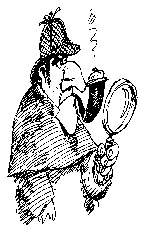

Looking for Lost Groups
There are roughly 360 groups in Suffolk County. Of that number, Intergroup has a mailing address, and therefore regular contact with about 180. Meeting List Chair Alan S. and Corresponding Secretary Jon H. are determined to reach out to those "lost" groups. Why?
First, we often hear from newcomers that the group they first tried to go to was not meeting where or when the list said. How many suffering alcoholics have given up because they couldn't find a meeting we'll never know, but one is too many. So we have to keep the meeting list accurate and up-to-date. Second, the meeting list has grown as large as it can in its current format. To add more groups, we'd have to switch to a more expensive booklet format. If we can eliminate "dead" groups, we can avoid this expense. And third, it is the purpose of Intergroup to serve the A.A. groups in Suffolk County. We can't do this if we can't tell you what we're doing and get your feedback.
Alan and Jon have printed up business reply cards, one for each group on the meeting list with no address. We ask for your group's mailing address, if it has one, and if your group's listing is correct . If you know of a group in your area that is no longer meeting, call the office and let us know. Please help us to serve you better
Share-a-thon from Page one
this meant the Share-a-thon, while expected to show neither profit nor loss, had to generate enough revenue to cover expenses. For the event to be free of charge, the by-laws had to be changed. The motion was amended and sent to the Committee for review.
In May, the Committee reported back with slightly revised wording. The Share-a-thon amendment was published in June's
Bulletin,
and after discussion at the June and July meetings, the motion passed 48-13.
The Committee will not be printing or distributing tickets this year, because the event is free. Programs and name tags will be distributed at the door as in the past. IMPORTANT NOTE: Lunch will be available in the St. Joseph's cafeteria, but will NOT be free. Coffee, cookies and donuts will be available in the hospitality room throughout the day, and donation cans will be placed there for those willing to help defray the costs.
The Committee is expecting an exceptional turnout for the Share-a-thon and has made arrangements for extra rooms for workshops and meetings. IMPORTANT NOTE: Individual volunteers are
Archives from Page one
Help us complete our collection of SIA Bulletins - as well as past meeting lists, Grapevines and any material related to A. A. in Suffolk County. Has your group or meeting submitted its history yet? A special tip of the Archives hat to Jim C. of the East Northport group, who took it upon himself to gather histories of several groups in the area.
Finally, as of this writing we have 53 A.A.s with 30 years or more sobriety who have signed the Archives Big Book. Contact the SIA office to find out where the Book is available.
Lest from Page one
Now this is one commonplace observation on drinkers which we hear all the time.
Moderate drinkers have little trouble in giving up liquor entirely if they have good reason for it.They
can
take it or leave it alone. Then we have a certain type of hard drinker. He may have the habit badly enough to gradually impair him physically and mentally. It may cause him to die a few years before his time. If a sufficiently strong reason...ill health, falling in love, change of environment, or the warning of a doctor...becomes operative, this person can also stop or moderate. But what of the real alcoholic?
He may start off as a moderate drinker, he may or may not become a continuous hard drinker; but at some stage of his drinking career he begins to lose all control of his liquor consumption, once he starts to drink. He does absurd, incredible, tragic things while drinking. He is a real Dr. Jekyll and Mr. Hyde. He is seldom mildly intoxicated.He may be the finest fellow in the world, but let him drink for a day, and he frequently becomes disgustingly, and even dangerously antisocial. He is often perfectly sensible and well-balanced concerning everything but liquor, but in that respect is incredibly dishonest and selfish. The day comes when he cannot make it and gets drunk all over again. This is by no means a comprehensive picture of the true alcoholic, as our behavior patterns vary. But this description would identify him roughly.
Back
Next